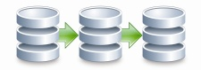

Izenda Fusion delivers dynamic real-time analytics from multiple databases and applications without
having to do periodic ETL into a data warehouse. It gives you instant insight into what's happening
across the entire organization right now, and eliminates the need for costly and complex data warehousing
projects. In today's dynamic environment, waiting until next week or even the next day for a batch process
gives your competitors an advantage.
Traditional data warehouse and ETL tools make a periodic copy of application data. Izenda fusion virtualizes
data in real time and pulls just what it needs when reports are viewed.
In-Memory Analytics and Data Caching
Get lightning-fast response times even on the largest databases. Fusion intelligently caches data based on when your data changes. Even rich dashboards containing dozens of queries, taking minutes to run on multiple databases across the globe can come back in a flash.

Real Time Analytics On Multiple Simultaneous DBs
In today's competitive landscape, yesterday's data is like yesterday's newspaper. Giving your entire organization real-time business insight may give you an edge over your competitors that makes a difference to your bottom line.
Your Entire Data Universe
Modern enterprises need access to a diverse set of data sources, contained behind a multitude of different systems. Izenda Fusion lets you connect to common data sources instantly and custom web services through an extensible API. Please contact sales@izenda.com or your account manager to schedule a consultation on how we can connect to all your data.
- Microsoft SQL Server
- Oracle
- MySQL
- PostgreSQL
- DB2
- OData
- Sql Server Analysis Services (SSAS)
- Sharepoint (Forms & Lists)
- Xml Data Sources
- Custom Web Services
- Windows Communication Foundation (WCF)
- Excel CSV Files
- Entity Attribute Value (EAV) Databases
- NoSQL Databases
Izenda Fusion dynamically routes queries to the appropriate data source in real-time. For example, a dashboard may have information that comes from several different databases scattered across the globe. Izenda fusion pulls this information together instantly and seamlessly. To the user, the data acts like it is in one place.
Izenda Fusion offers all the benefits of a traditional data warehouse without the massive IT investment. The average BI project takes 18 months to complete. By the time it is ready, the business requirements have changed. Izenda fusion can be implemented in a matter of hours.
SETUP
To experience the power of Izenda fusion, add the following code to your initialization method of the AdHocConfig class which is normally in Global.asax:
Configure your primary connection normally via the API. Note that this can not be done from the Settings page and must be SQL Server:
AdHocSettings.SqlServerConnectionString = "INSERT_CONNECTION_STRING_HERE";
Next, add secondary connections via the FusionDriver.Add() methods. These will require an alias to be specified:
Izenda.Fusion.FusionDriver.AddSqlConnection("SQLDB", "server=server;database=db");
Izenda.Fusion.FusionDriver.AddOracleConnection("OracleDB", "server=oracle");
Izenda.Fusion.FusionDriver.AddODataConnection("WebService"," http://odata.server.com");
Where Is The data cached?
The report data is cached in memory and backed up to disk on the web server's temp folder. Only the final results are cached, not the source data.
How Does Data Get Into The Cache?
Data enters the cache when a report or dashboard is executed, saved, previewed or scheduled, pre-cached using the API.
How Does The Cache Get Updated?
The cache gets updated when a user clicks "Update Results" in the report viewer, saves a report or executes a report after the cache element expires based on the value of DataCacheExpiration. Optionally, you may also run IzendaFusionCache.exe to refresh the cache manually.
How Does The Cache Expire?
The cache expires after 30 days by default. This can be configured for a set number of days or for a specific time such as Saturday at midnight.
How Much Space Does The Cache Require?
Izenda recommends about to 10k per report part for average sized reports. In an environment where there are 100 reports and each one has two parts (e.g. a chart and summary), we recommend 20MB of free disk space and memory.
How Does Smart Refresh Work?
The cache stores information on how frequently reports and parameter combinations are used. A scheduled task runs when the system is idle and refreshes the cache for recently used reports with expired data.
SQL Server, SharePoint and Excel are registered trademarks of Microsoft Corporation. Oracle is a registered trademark of Oracle Corporation. DB2 is a registered trademark of IBM Corporation. Izenda Fusion is a trademark of Izenda, LLC.